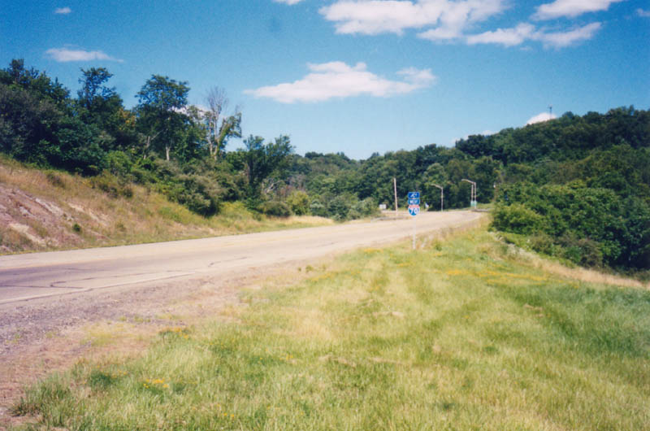
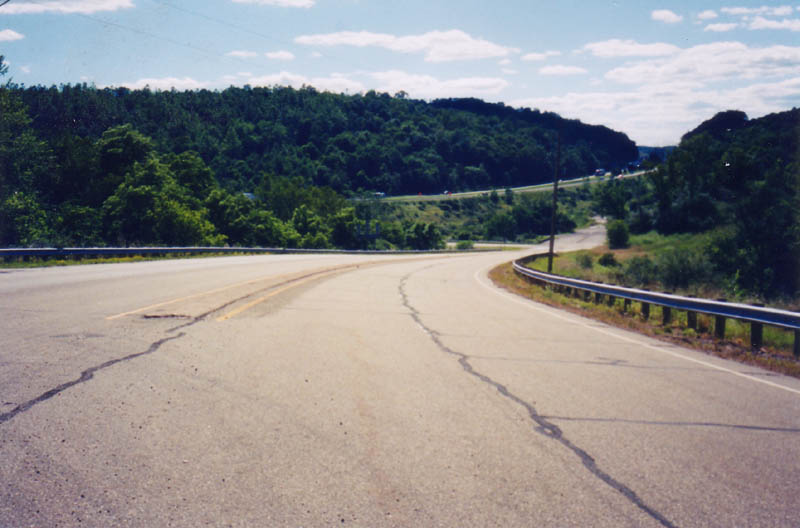

The Ghost of Lady Bend Hill

Lady Bend Hill is part of Route 40, the old National Road, between Hendrysburg and Morristown in Belmont County. The third bend from the top of the hill is said to be haunted by the ghost of a woman who, after fleeing a fight with her lover, was somehow decapitated by a bolt of lightning. I'd be interested to see how that worked.
Anyway, now she scares motorists on Route 40. She scared a guy driving a team of horses on a frigid New Year's Day, 1896, but obviously that was a long time ago. A more recent instance of strange happenings on the hill was reported to me via e-mail, as follows.
We lived in a farmhouse about 3 miles away. Right at the bottom of Ladybend Hill. I remember one morning my mom looked outside up the hill and there was a man swinging from the tree with a noose around his neck. He had been a hobo, just passing through.

The suicide might be another of the ghosts of the hill, which you can see pictured up above. It represents one of the few remaining stretches of Route 40 in this part of the state, where Interstate 70 interrupts and even replaces the old National Road at several points and for many miles. As you can see, it's a steep, winding, S-shaped curve in the road. Today you can turn from the middle of Lady Bend Hill and get onto I-70, which is visible in the background of the second picture. Walk the third curve alone one night and let me know if anything happens.
Back